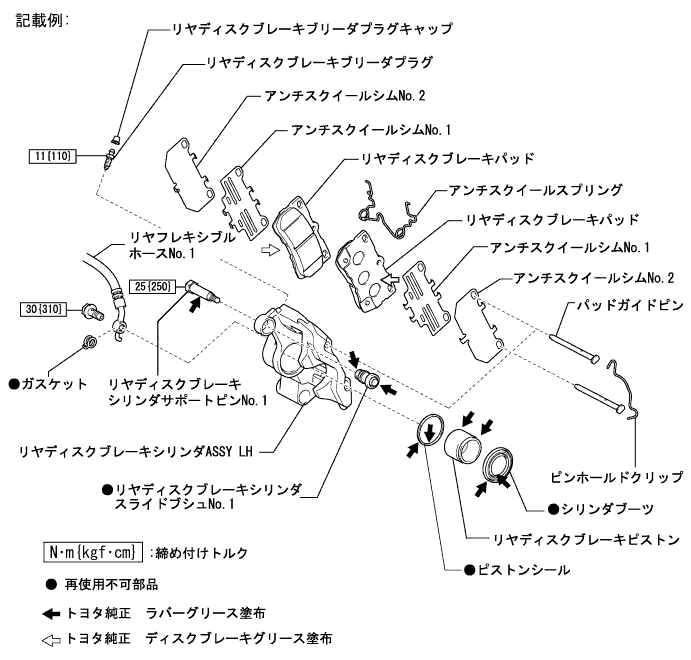
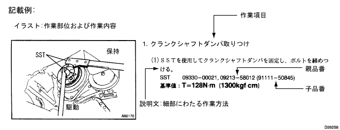

How to Use Model Section General Information |
Repair work can be broadly divided into 3 processes: [diagnosis], [removal/installation, replacement, disassembly/reassembly and inspection/adjustment work] and [final inspection].
This manual describes process 1 [diagnosis] and process 2 [removal/installation, replacement, disassembly/reassembly and inspection/adjustment work]; the description of process 3 [final inspection] has been omitted.
The following basic operations are omitted from this manual, but must be performed in actual work.
Jacking and lifting work
Cleaning and washing of removed parts as necessary
Visual inspection
Items to be prepared before work include SST, tools, gauges, lubricants and others, support tools and stationary tools/measuring instruments; these are listed in the Preparation section. However, items of preparation that are thought to be standard equipment in general service shops, such as tool stands, jacks and rigid racks, have been omitted.
Tools and equipment other than SST listed in the Preparation list are given as examples only, and do not specify a particular supplier or particular product name or part number.
Work that uses SST (TaSCAN) in the text (diagnosis, measurement, etc.) can also be performed using the diagnostic tester DST-2 handled by Denso Service or Denso SS.
Component illustrations are provided for each section or title as necessary.
The component illustrations indicate non-reusable parts, grease application points, precoated bolts and torque specifications.

Torque specifications, lubrication points and non-reusable parts are described as key points of the procedure.
Only procedure items with key points are described; the work location and work content are shown in illustrations, and the descriptions give detailed work methods, standard values, notices, etc.
Some illustrations are shared with similar models. For this reason, details may differ from the actual vehicle.

Standard values and limits are shown in bold in the text.
| Standard | Indicates the allowable range for inspection and adjustment. |
| Limit | Indicates the maximum or minimum value that must not be exceeded during inspection and adjustment. |
| Reference Value | When the measurement method for determining the standard value is extremely difficult, indicates the standard value for a simplified measurement method when there is practically no risk of a malfunction. |
| <WARNING> | Describes items that may cause injury to the technician or other persons, and items that may lead to injury or accidents if not observed. |
| <NOTICE> | Describes items and procedures that must not be performed and that require particular attention, since failure to observe them will damage the vehicle or components. |
| <HINT> | Supplementary explanations to make work easier are given separately from the main text. |
Units used in this manual are given first in SI units (International System of Units), then in metric units.
(Example)
| Item | SI Unit | Conventional Unit | Conversion Factor to SI Unit |
|---|---|---|---|
| Acceleration | m/s2
| G | 9.80665 |
| Torque, Moment | N/m | kgf/cm | 0.0980665 |
| Force | N | kgf | 9.80665 |
| Pressure | MPa | kgf/cm2
| 0.0980665 |
| kPa | mmHg | 0.133322 | |
| Power | kW | PS | 0.735499 |
| W | kcal/h | 1.16279 | |
| Volume | cm3
| cc | 1 |
| Spring Constant | N/mm | kgf/mm | 9.80665 |
| M (mega) | 106
| d (deci) | 10-1=0.1 |
| k (kilo) | 103
| c (centi) | 10-2=0.01 |
| h (hecto) | 102
| m (milli) | 10-3=0.001 |
| da (deca) | 101
| μ (micro) | 10-6=0.000001 |